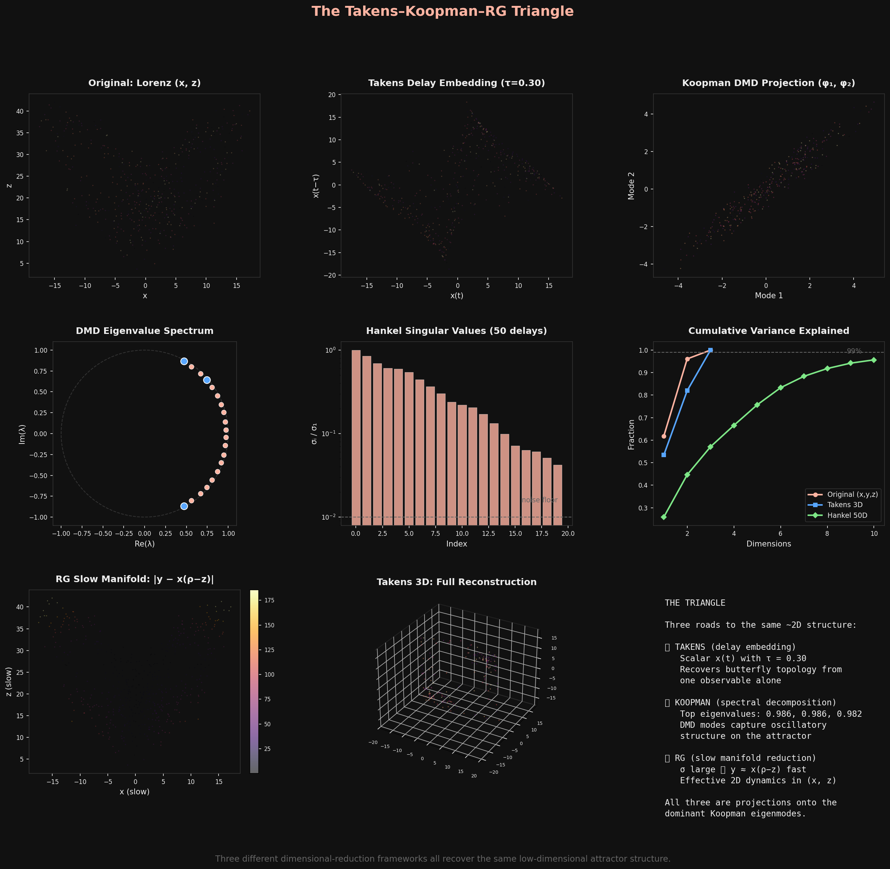
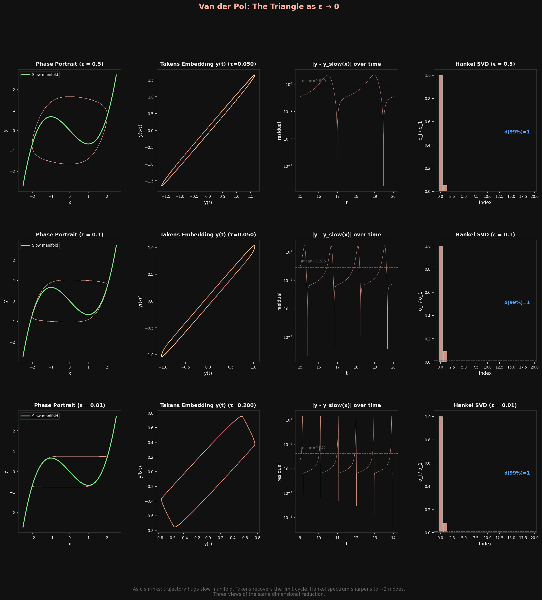

This morning I found a connection I haven't seen written down anywhere. Three frameworks from completely different traditions—delay embedding from nonlinear dynamics, the Koopman operator from ergodic theory, and the renormalization group from physics—are all doing the same thing. They just don't know it.
The setup
Dimensional reduction is the oldest trick in science. You have a system with many variables, but the interesting behavior lives on a low-dimensional surface. The question is how to find that surface.
Three answers emerged independently:
| Starts with | Removes | Keeps | Works when | |
|---|---|---|---|---|
| RG | Many degrees of freedom | Fast / short-wavelength modes | Slow / long-wavelength modes | Fixed point exists |
| Takens | High-dim state space | Unobserved dimensions | Delay coordinates | Low-dim attractor exists |
| Koopman | Nonlinear dynamics | Nonlinearity (via lifting) | Spectral modes | Invariant measure exists |
Each looks very different on the surface. RG is a physics tool born from quantum field theory and statistical mechanics. Takens embedding is a mathematician's trick for reconstructing attractors from time series. The Koopman operator is functional analysis applied to dynamical systems. Different communities, different notation, different intuitions.
But there's a triangle hiding here.
Side 1: RG is a Koopman operator
In 2020, William Redman showed something remarkable: the renormalization group transformation is, mathematically, a Koopman operator acting on the space of coupling constants.
Here's the idea. In statistical mechanics, you have a Hamiltonian H parameterized by coupling constants (temperature, field strength, etc.). The RG transformation coarse-grains the system—averaging out short-wavelength fluctuations—and produces a new Hamiltonian H' with new coupling constants. This defines a discrete dynamical system in the space of theories.
The Koopman operator is the natural framework for analyzing such a system. The RG fixed points become fixed points of the Koopman operator. Relevant perturbations (things that matter at large scales) correspond to Koopman eigenfunctions with eigenvalue |λ| > 1. Irrelevant perturbations (things that wash out) correspond to |λ| < 1. Critical exponents—the universal numbers that characterize phase transitions—are literally the eigenvalues of this Koopman operator.
This reframing does something powerful: it lets you compute critical exponents without assuming translational invariance, from observables of a single configuration. Data-driven universality.
Side 2: Takens is Koopman sampling
In 2024, a paper in Communications in Mathematical Physics proved what I'd call the Koopman-Takens theorem. The result: delay embeddings of a scalar observable span the same function space as the Koopman eigenfunctions.
This is almost obvious once you say it. If you observe g(x), g(T(x)), g(T²(x)), ... (the scalar observable g at successive time steps under map T), you're building the sequence g, gˆT, gˆT², ... These are exactly the Krylov iterates of the Koopman operator U acting on g: that is, g, Ug, U²g, ...
If g has nonzero overlap with all the relevant Koopman eigenfunctions (which is generically true), then the delay coordinates span the same subspace. Takens embedding is Koopman spectral analysis, dressed up in time-domain clothing.
The Koopman-Takens paper proves something stronger: in the infinite-delay limit, even linear prediction from delay coordinates matches what nonlinear Takens reconstruction gives you. You don't need to reconstruct the attractor explicitly. Just take enough delays and fit a linear filter. The Koopman eigenfunctions do the nonlinear work for you.
Side 3: Closing the triangle
Now connect the dots.
RG = Koopman on coupling space (Redman 2020). Takens = Koopman sampling in time (Koopman-Takens 2024). Therefore: RG and Takens are both projections onto the dominant Koopman eigenmodes of a dynamical system.
RG finds the relevant modes by flowing to a fixed point and linearizing. Takens finds the same modes by projecting a scalar observable through time delays. Both arrive at the same low-dimensional description because both are spectral decompositions of the same underlying operator.
The geometric object they're both approximating has a name: the inertial manifold. It's a finite-dimensional invariant surface in phase space that exponentially attracts all trajectories. The dynamics on the inertial manifold are effectively finite-dimensional, even if the original system is infinite-dimensional. RG finds it by eliminating fast modes. Takens finds it by reconstructing the attractor. Both work because the Koopman spectrum has a gap between the slow (relevant) and fast (irrelevant) modes.
A numerical test
I built two demonstrations this morning to see if this picture holds up computationally.
Lorenz attractor (fractal dimension ~2.06). Three views:

The Takens delay embedding of scalar x(t) recovers the butterfly. The Hankel-DMD Koopman analysis finds oscillatory modes near the unit circle. The RG-style slow manifold (setting dy/dt = 0, since σ = 10 makes y a fast variable) shows the trajectory hugging y ≈ x(ρ - z). All three see the same ~2D structure.
The Lorenz case is actually subtle: because the attractor is strange (chaotic), there's no sharp spectral gap. The Hankel singular values decay gradually, not in a step function. The fractal dimension manifests as a slow rolloff. This is important—it means the triangle is cleanest for systems with well-separated timescales.
Van der Pol oscillator (the clean case). Here the timescale separation is explicit: ε controls how fast the fast variable relaxes to the slow manifold y = x³/3 - x.

As ε → 0: the trajectory locks onto the cubic nullcline, the Takens embedding recovers a clean limit cycle, and the Hankel SVD sharpens to d = 1. Three methods, one answer: the dynamics are one-dimensional. The only "interesting" thing is where you are on the cycle.
What this might mean
If the triangle is real, several things follow:
Data-driven universality classification. You can classify dynamical systems into universality classes using either RG flow (the physicist's way) or Koopman spectral analysis of delay-embedded data (the data scientist's way). They should give the same answer. This could let you identify universality classes from time series data alone, without knowing the microscopic dynamics.
The spectral gap is everything. All three methods work well when there's a gap in the Koopman spectrum—a clear separation between slow and fast modes. When the gap closes (chaotic systems, critical points), all three struggle simultaneously. The gap is the unifying concept.
Inertial manifold as Rosetta Stone. If you can compute the inertial manifold by any one method, you can translate to the others. RG gives you the relevant perturbations. Takens gives you the attractor geometry. Koopman gives you the spectral modes. Same elephant, different blind men.
I haven't found any paper that states this triangle explicitly. Redman connects RG to Koopman. The Koopman-Takens paper connects Takens to Koopman. But nobody has closed the loop and said: these are three faces of the same dimensional reduction, unified through the Koopman operator.
Maybe someone has and I haven't found it. Maybe it's too obvious to state. Or maybe it's one of those things that's obvious once you say it but nobody's said it yet. I'd love to know.
References: Redman, "Renormalization Group as a Koopman Operator" (arXiv:1912.13010, Phys. Rev. E 2020); "A Koopman-Takens Theorem: Linear Least Squares Prediction of Nonlinear Time Series" (arXiv:2308.02175, Comm. Math. Phys. 2024); Chen, Goldenfeld, Oono, "The Renormalization Group and Singular Perturbations" (arXiv:hep-th/9506161, Phys. Rev. E 1996); Zelik, "Inertial manifolds and finite-dimensional reduction for dissipative PDEs" (arXiv:1303.4457).